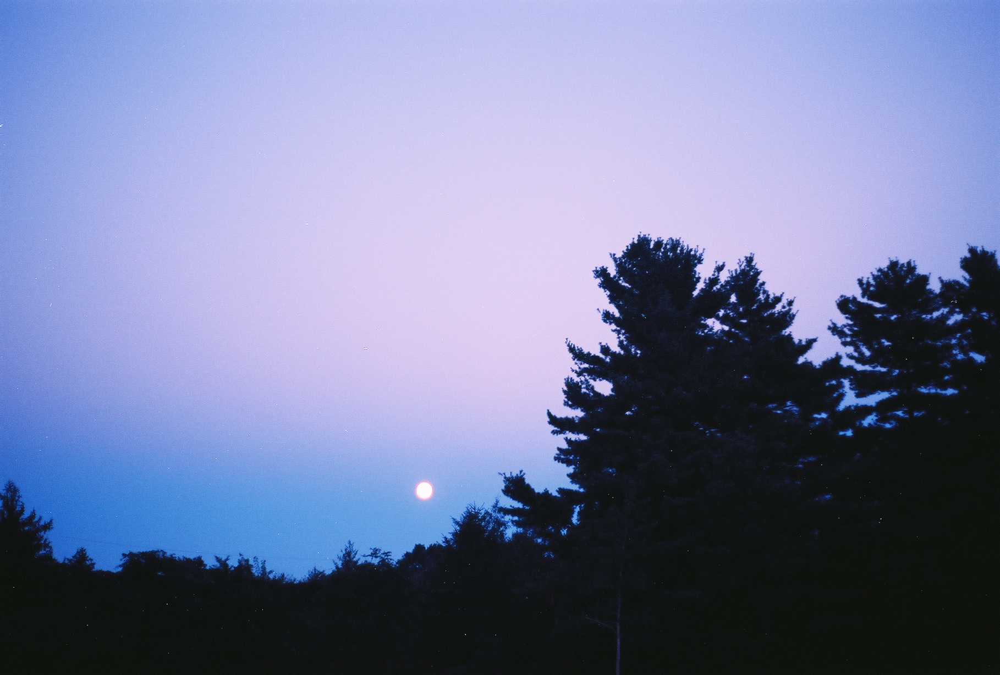
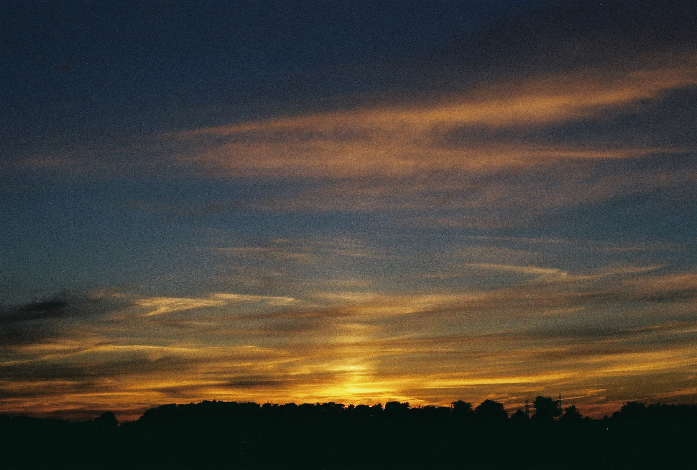
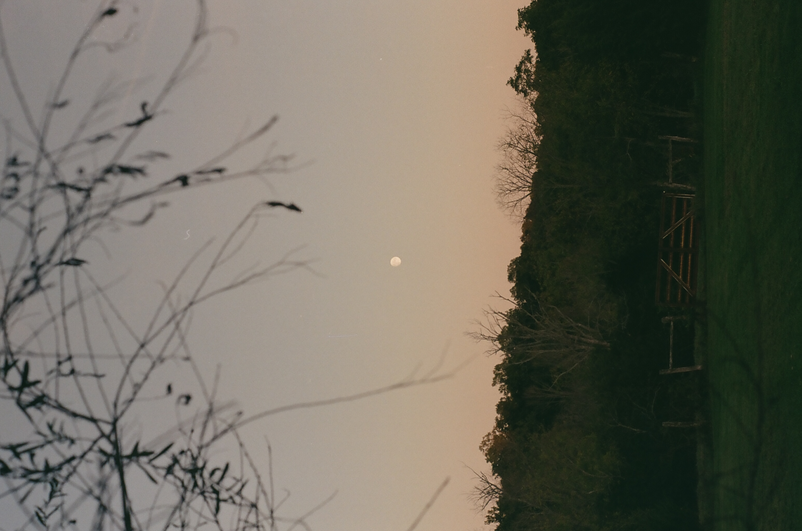

My name is Amanda Jo, I'm a film photographer based in Louisville, KY. Along with a passion for vintage photography, I am a mother, outdoor enthusiast, gardener, waitress, and a brand new website developer (I even wrote the code for this website!) I hope you enjoy my collection of film I've been cultivating over the last decade.
To order prints, schedule a session with me, or just chat about film, send me a message with your name and email. I'll get back to you as soon as I can.